- បញ្ជាក់ប្រភេទមុំ និងរង្វាស់មុំ
- រង្វាស់មុំដោយប្រើរ៉ាប័រទ័រ
- ធ្វើប្រមាណវិធីទាំង 4 លើមុំ
- សង់កន្លះបន្ទាត់ពុះមុំ ។
1. សញ្ញាណមុំ
1.1 សញ្ញាណទូទៅនៃមុំ
គេមានកន្លះបន្ទាត់ពីរ \(\displaystyle Ox\) និង \(\displaystyle Oy\) ដែលមានគល់រួម \(\displaystyle O\) ហើយចែកប្លង់ជាពីរផ្នែកគឺ ផ្នែកទី (I) និង ផ្នែកទី (II) ដែលផ្នែកនីមួយៗហៅថាមុំ ។
ផ្នែកទី (I) ហៅថាមុំប៉ោង និងផ្នែកទី (II) ហៅថាមុំផត ។
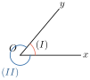
គេមានកន្លះបន្ទាត់ \(\displaystyle OA\) និង \(\displaystyle OB\) ដែល \(\displaystyle O\) ជាគល់រួម ។ គេបានមុំ \(\displaystyle AOB\) គេកំណត់សរសេរ \(\displaystyle \angle AOB\) ឬ \(\displaystyle \angle BOA\) ឬយ៉ាងងាយ \(\displaystyle \angle O\) បើមិនបណ្ដាលឱ្យភាន់ច្រឡំ ។
កន្លះបន្ទាត់ទាំងពីរហៅថាជ្រុងនៃមុំ គល់រួមហៅថាកំពូលនៃមុំ ។
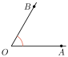
នៅថ្នាក់ទី 7 នេះ គេលើកយកតែករណីមុំប៉ោងមកសិក្សា ។
| និយមន័យ មុំជាផ្នែកមួយនៃប្លង់កំណត់ដោយកន្លះបន្ទាត់ពីរដែលមានគល់រួម ។ |
គូររូបមុំ \(\displaystyle xOy\) ប្រាប់ឈ្មោះ និមិត្តសញ្ញា ជ្រុង និងកំពូល ។
| រូប | ឈ្មោះ | និមិត្តសញ្ញា |
| មុំ \(\displaystyle xOy\) ឬមុំ \(\displaystyle yOx\) | \(\displaystyle \angle xOy\) ឬ \(\displaystyle \angle yOx\) | |
| ឬមុំ \(\displaystyle O\) | ឬ \(\displaystyle \angle O\) | |
| ជ្រុងនៃមុំ \(\displaystyle xOy\) | \(\displaystyle Ox\) , \(\displaystyle Oy\) | |
| កំពូលនៃមុំ \(\displaystyle xOy\) | \(\displaystyle O\) |
តើបន្ទាត់ពីរប្រសព្វគ្នាកំណត់បានមុំប៉ុន្មាន ?
1.2 ប្រភេទមុំ
គេអាចធ្វើចំណាត់ថ្នាក់មុំប៉ោង ដូចតទៅ ៖
| រូប | ឈ្មោះ | និយមន័យ | ||
| មុំស្រួច | តូចជាងមុំកែង | |||
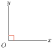 | មុំកែង |
| ||
| មុំទាល | ធំជាងមុំកែង តែតូចជាងមុំរាប |
មុំរាប ជ្រុង \(\displaystyle Ox\) និង \(\displaystyle Oy\) ជាបន្លាយគ្នា
មុំសូន្យ ជ្រុង \(\displaystyle Ox\) និង \(\displaystyle Oy\) ត្រួតស៊ីគ្នា
មុំពេញ ជ្រុង \(\displaystyle Ox\) និង \(\displaystyle Oy\) ត្រួតស៊ីគ្នា
តាមរូបខាងស្ដាំយកតាម ទិសដៅទ្រនិចនាឡិកា ។ ប្រាប់ឈ្មោះនិងប្រភេទមុំនីមួយៗ ។
\(\displaystyle \angle tOx\) ជាមុំស្រួច \(\displaystyle \angle tOy\) ជាមុំកែង
\(\displaystyle \angle yOz\) ជាមុំទាល \(\displaystyle \angle zOx\) ជាមុំរាប
\(\displaystyle \angle tOt\) ជាមុំសូន្យ ។
ពិនិត្យរូប រួចសរសេរឈ្មោះ និងប្រភេទមុំដែល មានក្នុងរូបនេះ ?
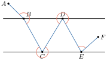
1.3 ឯកតាមុំ
ឯកតាមុំដែលគេនិយមប្រើគឺ :
- ក.
មុំកែង ស្មើកន្លះមុំរាប ( គេតាងដោយអក្សរ \(\displaystyle D\) )
- ដឺក្រេ \(\displaystyle (^\circ) = \frac{1}{90}D\) ឬ \(\displaystyle 1D = 90^\circ\) ។
- ខ.
ឯកតាបន្ទាប់នៃដឺក្រេគឺ
- ទីនុត \(\displaystyle ({}') = \frac{1^\circ}{60}\)
- ស៊ីគុង \(\displaystyle ({}'') = \frac{1'}{60}\)
\(\displaystyle 1 \text{ មុំរាប} = 2D \; , \; 1D = 90^\circ \; , \; 1^\circ = 60' \; , \; 1' = 60''\) ។
- គ. ក្រាត (gr) \(\displaystyle = \frac{1}{100}D\) ឬ \(\displaystyle 1D = 100gr\) ។
សរសេរ \(\displaystyle 8^\circ 18' 20''\) ជាស៊ីគុង និង \(\displaystyle 42750''\) ជាដឺក្រេ ទីនុត ស៊ីគុង ។
សរសេរ \(\displaystyle 8^\circ 18' 20''\) ជាស៊ីគុង :
\(\displaystyle 8^\circ = 8 \times 60' = 480'\)
\(\displaystyle 480' + 18' = 498'\)
\(\displaystyle 498' = 498 \times 60'' = 29880''\)
ដូចនេះ \(\displaystyle 8^\circ 18' 20'' = 29880'' + 20'' = 29900''\)
សរសេរ \(\displaystyle 42750''\) ជាដឺក្រេ ទីនុត ស៊ីគុង :
\(\displaystyle 42750'' = \frac{1' \times 42750}{60} = 712' 30''\)
\(\displaystyle 712' = \frac{1^\circ \times 712}{60} = 11^\circ 52'\)
ដូចនេះ \(\displaystyle 42750'' = 11^\circ 52' 30''\) ។
គណនាប្រមាណវិធីខាងក្រោម ក. \(\displaystyle 17^\circ 15' 29'' + 13^\circ 11' 40'' + 8^\circ 54' 12''\) ខ. \(\displaystyle 25^\circ 36' 20'' - 15^\circ 50' 32''\) ។
2. ឧបករណ៍សម្រាប់រង្វាស់មុំ
ប្រដាប់រង្វាស់មុំមានច្រើនប្រភេទដូចជា
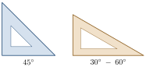 | កែង : ជាឧបករណ៍សម្រាប់គូសបន្ទាត់កែង ។ ឧបករណ៍នេះ ធ្វើពីឈើ ជ័រ ឬលោហៈមួយបន្ទះដែលមានមុំកែងមួយ ។ |
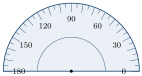 | រ៉ាប័រទ័រ : មានរាងជាកន្លះរង្វង់មានដាក់រង្វាស់ពី \(\displaystyle 0^\circ\) ទៅ \(\displaystyle 180^\circ\) ទាំងសងខាងដោយមានលេខ \(\displaystyle 90^\circ\) នៅកណ្ដាល ។ ឧបករណ៍នេះគេច្រើនធ្វើពីជាតិប្លាស្ទិកថ្លាទើបស្រួលប្រើ ។ រ៉ាប័រទ័រមានប្រយោជន៍ក្នុងការគូសនិងរង្វាស់មុំ ។ |
| អាលីដាត : គេធ្វើអំពីឈើមួយបន្ទះវិលជុំវិញអ័ក្សឈរ \(\displaystyle xy\) ដែលមានចុងម្ខាងគេដាក់កន្ទបប្រហោងមួយ \(\displaystyle T\) សម្រាប់ ដាក់ភ្នែកមើល ហើយចុងម្ខាងទៀតចោះប្រហោងទ្រវែងមាន ខ្សែឆ្មារ \(\displaystyle ZZ'\) នៅកណ្ដាល ។ វាជាឧបករណ៍សម្រាប់រង្វាស់មុំ រវាងទិសពីរដែលនៅក្នុងប្លង់ដេក ។ |
2.1 រង្វាស់ និងសង់មុំដោយប្រើរ៉ាប័រទ័រ
ចូររង្វាស់ \(\displaystyle \angle xOy\) រូបខាងក្រោមដោយប្រើរ៉ាប័រទ័រ ។
ដើម្បីរង្វាស់ \(\displaystyle \angle xOy\) គេដាក់រ៉ាប័រទ័រឱ្យផ្ចិតរបស់វាចំកំពូល \(\displaystyle O\) ហើយជ្រុង \(\displaystyle [Ox)\) កាត់តាម \(\displaystyle 0^\circ\) ( ពីខាងក្នុង ) នៃរ៉ាប័រទ័រ ។ ប្រើជ្រុងម្ខាងទៀតនៃមុំកាត់រ៉ាប័រទ័រត្រង់ចំណុចដូចរូបខាងក្រោម ។ ត្រង់លេខ \(\displaystyle 50^\circ\) ។
ដូចនេះ \(\displaystyle \angle xOy\) មានរង្វាស់ \(\displaystyle 50^\circ\) ។
គេសរសេរ \(\displaystyle \angle xOy = 50^\circ\) ។
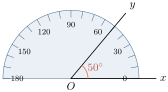
គេអាចធ្វើចំណាត់ថ្នាក់មុំទៅតាមរង្វាស់មុំរបស់វា ។
| មុំ | រង្វាស់មុំ | ប្រភេទមុំ | និយមន័យមុំ |
 | \(\displaystyle 30^\circ\) | មុំស្រួច | មានរង្វាស់ធំជាង \(\displaystyle 0^\circ\) តែតូចជាង \(\displaystyle 90^\circ\) |
| \(\displaystyle 90^\circ\) | មុំកែង | មានរង្វាស់ស្មើនឹង \(\displaystyle 90^\circ\) | |
| \(\displaystyle 120^\circ\) | មុំទាល | មានរង្វាស់ធំជាង \(\displaystyle 90^\circ\) តែតូចជាង \(\displaystyle 180^\circ\) | |
| \(\displaystyle 180^\circ\) | មុំរាប | មានរង្វាស់ស្មើនឹង \(\displaystyle 180^\circ\) | |
| \(\displaystyle 0^\circ\) | មុំសូន្យ | មានរង្វាស់ស្មើនឹង \(\displaystyle 0^\circ\) | |
| \(\displaystyle 360^\circ\) | មុំពេញ | មានរង្វាស់ស្មើនឹង \(\displaystyle 360^\circ\) |
សង់មុំ \(\displaystyle \angle xyz = 150^\circ\) ដោយប្រើរ៉ាប័រទ័រ ។
- គូសកន្លះបន្ទាត់ \(\displaystyle yx\) ដែលមានគល់ \(\displaystyle y\)
- ដាក់ផ្ចិតរ៉ាប័រទ័រឱ្យចំកំពូល \(\displaystyle y\) នៃមុំ ហើយជ្រុង \(\displaystyle xy\) កាត់តាមចំណុច \(\displaystyle 0^\circ\) ( ពីខាងក្នុង ) នៃរ៉ាប័រទ័រ ។
- យកចុងខ្មៅដៃចុចលើក្រដាសត្រង់ចំណុចដែលមានលេខ \(\displaystyle 150^\circ\) នៅលើរ៉ាប័រទ័រ
- គូស \(\displaystyle yz\) កាត់តាមចំណុចដៅ នោះគេបាន \(\displaystyle \angle xyz = 150^\circ\) ។
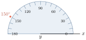
ដោយប្រើរ៉ាប័រទ័រ រង្វាស់មុំខាងក្រោម
2.2 សង់មុំដោយប្រើដែកឈាន
គេឱ្យមុំ \(\displaystyle xOy\) មួយ ។ សង់មុំ \(\displaystyle AOB\) មួយដែលមានកំពូល \(\displaystyle O\) ឱ្យប៉ុននឹងមុំ \(\displaystyle xOy\) ។ ផ្តិតចម្លងមុំ \(\displaystyle xOy\) ហើយយកទៅដាក់ ដោយឱ្យកំពូល \(\displaystyle O\) ត្រួតលើចំណុច \(\displaystyle O'\) រួចយក ខ្មៅដៃគូសតាមជ្រុង \(\displaystyle Ox\) និង \(\displaystyle Oy\) ។
នោះគេបានមុំថ្មី \(\displaystyle A'O'B'\) តាមប្រាប់ ។
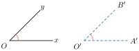
សង់មុំមួយដោយប្រើដែកឈានឱ្យប៉ុនមុំមួយទៀត ។
គូសធ្នូនៃរង្វង់ដែលមានផ្ចិត \(\displaystyle O\) ឱ្យកាត់ជ្រុងនៃ \(\displaystyle \angle xOy\) ត្រង់ \(\displaystyle M\) និង \(\displaystyle N\) ។ ( រក្សាគម្លាតដែកឈាន )
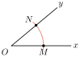
គូសកន្លះបន្ទាត់ \(\displaystyle At\) និងធ្នូរង្វង់ផ្ចិត \(\displaystyle A\) កាំស្មើ \(\displaystyle OM\) ឱ្យកាត់ \(\displaystyle At\) ត្រង់ \(\displaystyle B\) ។
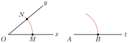
ប្រើដែកឈានវាស់ប្រវែង \(\displaystyle NM\) ។ (រក្សាគម្លាតដែកឈាន)
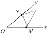
- គូសធ្នូរង្វង់ផ្ចិត \(\displaystyle B\) កាំស្មើនឹង \(\displaystyle MN\) ( រក្សាគម្លាតដែកឈានដូច 3 )
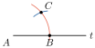
ធ្នូរង្វង់ទាំងពីរកាត់គ្នាត្រង់ចំណុច \(\displaystyle C\) ។ គូសកន្លះ បន្ទាត់ \(\displaystyle Az\) កាត់តាមចំណុច \(\displaystyle C\) ។ ដូចនេះគេបាន \(\displaystyle \angle zAt\) ប៉ុន \(\displaystyle \angle CAB\) ។
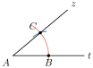
| និយមន័យ មុំពីរប៉ុនគ្នា គឺមុំពីរត្រួតស៊ីគ្នា ឬមានរង្វាស់ស្មើគ្នា ។ |
ដោយប្រើដែកឈាន សង់មុំខាងក្រោមឡើងវិញ
3. ប្រមាណវិធីលើមុំ
3.1 មុំជាប់
គេឱ្យ \(\displaystyle xOy\) និង \(\displaystyle yOz\) មានកំពូលរួម \(\displaystyle O\) មានជ្រុងរួម \(\displaystyle Oy\) ហើយនៅសងខាងជ្រុងរួម \(\displaystyle Oy\) ។ គេថា \(\displaystyle \angle xOy\) និង \(\displaystyle \angle yOz\) ជាមុំជាប់គ្នា ។
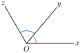
តាមរូបខាងក្រោម តើរូបមួយណាជាមុំជាប់ដោយគូសសញ្ញា \(\displaystyle \checkmark\) ក្នុងប្រអប់
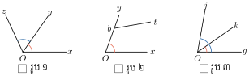
ក. \(\displaystyle \angle xOy\) និង \(\displaystyle \angle yOz\)
ខ. \(\displaystyle \angle xOy\) និង \(\displaystyle \angle ybt\)
គ. \(\displaystyle \angle gOk\) និង \(\displaystyle \angle gOj\)
ក. ✓ ។
តើមុំជាប់នៃ \(\displaystyle \angle xOt\) ជាមុំអ្វី ?
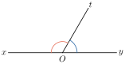
3.2 ប្រមាណវិធីលើមុំ
ក. វិធីបូក ដកមុំ
| រូប | ទំនាក់ទំនង |
| \(\displaystyle \angle zOx = \angle zOy + \angle yOx\) \(\displaystyle \angle yOx = \angle zOx - \angle zOy\) \(\displaystyle \angle zOy = \angle zOx - \angle yOx\) |
ខ. វិធីគុណ ចែកមុំនឹងមួយចំនួន
| រូប | ទំនាក់ទំនង |
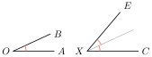 | \(\displaystyle \angle CXE = \angle AOB + \angle AOB\) \(\displaystyle = 2\angle AOB\) ឬ \(\displaystyle \angle AOB = \frac{\angle CXE}{2}\) គេថា \(\displaystyle \angle CXE\) ជាទ្វេគុណនៃ \(\displaystyle \angle AOB\) ឬ \(\displaystyle \angle AOB\) ជាកន្លះនៃ \(\displaystyle \angle CXE\) ។ |
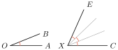 | \(\displaystyle \angle CXE = \angle AOB + \angle AOB + \angle AOB\) \(\displaystyle = 3\angle AOB\) ឬ \(\displaystyle \angle AOB = \frac{\angle CXE}{3}\) គេថា \(\displaystyle \angle CXE\) ជាត្រីគុណនៃ \(\displaystyle \angle AOB\) ឬ \(\displaystyle \angle AOB\) ជា \(\displaystyle \frac{1}{3}\) នៃ \(\displaystyle \angle CXE\) |
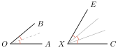 | \(\displaystyle \angle CXE\) ជាផលបូករវាងមុំពីរដែលមុំនីមួយៗមានរង្វាស់ស្មើនឹង \(\displaystyle \frac{1}{2} \angle AOB\) \(\displaystyle \angle CXE = 3 \frac{\angle AOB}{2}\) ឬ \(\displaystyle \angle AOB = 2 \frac{\angle CXE}{3}\) ។ |
- ផលបូកមុំពីរជាមុំមួយ បានដោយយកមុំទាំងពីរដាក់ឱ្យជាប់គ្នា ហើយលុបជ្រុងរួមចោល ។
- ផលដកមុំពីរ ជាមុំដែលគេយកទៅបូកនឹងមុំទីពីរដើម្បីឱ្យបានមុំទីមួយ ។
សង់មុំឡើងវិញឱ្យបានជាមុំជាប់គ្នា ហើយគណនាផលបូកមុំខាងក្រោម ។
សង់ \(\displaystyle \angle xOy\) និង \(\displaystyle \angle tO_1k\) នោះគេបាន \(\displaystyle \angle xOk = \angle xOy + \angle tO_1k\) \(\displaystyle = 35^\circ + 25^\circ = 60^\circ\)
ដូចនេះរង្វាស់មុំ \(\displaystyle \angle xOk = 60^\circ\) ។
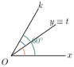
ចូរបំពេញតារាងខាងក្រោម ( រង្វាស់មុំគិតជាដឺក្រេ ) ។
| រូបភាព | \(\displaystyle \angle ABC\) | \(\displaystyle \angle CBT\) | \(\displaystyle \angle ABT\) |
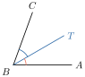 | \(\displaystyle 27\) | \(\displaystyle \dots\dots\) | \(\displaystyle 19\) |
| \(\displaystyle 77\) | \(\displaystyle 46\) | \(\displaystyle \dots\dots\) | |
| \(\displaystyle 69\) | \(\displaystyle \dots\dots\) | \(\displaystyle 35\) | |
| \(\displaystyle \dots\dots\) | \(\displaystyle 70\) | \(\displaystyle 12\) | |
| \(\displaystyle 81\) | \(\displaystyle 35\) | \(\displaystyle \dots\dots\) |
4. សង់កន្លះបន្ទាត់ពុះមុំដោយប្រើបន្ទាត់និងដែកឈាន
បើគេកាត់យកមុំ \(\displaystyle xOy\) មួយធ្វើពីក្រដាស រួចបត់មុំយ៉ាងណាឱ្យជ្រុង \(\displaystyle Ox\) ត្រួតស៊ីនឹងជ្រុង \(\displaystyle Oy\) ផ្នត់ដែលបត់បាននោះគេសន្មតថាជ្រុង \(\displaystyle Ot\) នោះគេបាន \(\displaystyle \angle xOt\) និង \(\displaystyle \angle tOy\) ប៉ុនគ្នា ព្រោះវាត្រួតស៊ីគ្នា ។ គេថា \(\displaystyle Ot\) ជាកន្លះបន្ទាត់ពុះនៃ \(\displaystyle \angle xOy\) ។
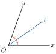
សង់កន្លះបន្ទាត់ពុះ \(\displaystyle [Ot)\) នៃ \(\displaystyle \angle xOy\) ដោយប្រើបន្ទាត់និងដែកឈាន ។
របៀបសង់កន្លះបន្ទាត់ពុះ \(\displaystyle \angle xOy\) គឺ
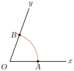 | ក. គូសធ្នូរង្វង់ផ្ចិត \(\displaystyle O\) ឱ្យកាត់តាមជ្រុងនៃ \(\displaystyle \angle xOy\) ត្រង់ចំណុច \(\displaystyle A\) និង \(\displaystyle B\) ។ |
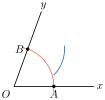 | ខ. គូសធ្នូនៃរង្វង់ផ្ចិត \(\displaystyle B\) ( មានកាំរង្វង់ធំជាង \(\displaystyle \frac{1}{2}AB\) ) ( រក្សាគម្លាតដែកឈានឱ្យនៅដដែល ) ។ |
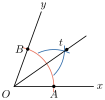 | គ. គូសធ្នូនៃរង្វង់ផ្ចិត \(\displaystyle A\) និងកាំមានរង្វាស់ស្មើនឹងរង្វង់ចំណុច (ខ) ។ (រង្វង់ដែកឈានដូចចំណុច (ខ)) ។ ធ្នូទាំងពីរកាត់គ្នាត្រង់ចំណុច \(\displaystyle t\) គូសភ្ជាប់ \(\displaystyle Ot\) គេបានកន្លះបន្ទាត់ពុះនៃមុំ \(\displaystyle \angle xOy\) តាមប្រាប់ ។ |
សង់កន្លះបន្ទាត់ពុះមុំខាងក្រោម
4.1 មុំផ្គុំ
គេមានមុំដូចខាងក្រោម
| ឈ្មោះមុំ | រូបភាព | និយមន័យ |
| មុំបំពេញ | | មុំពីរដែលមានរង្វាស់ផលបូកស្មើនឹង \(\displaystyle 90^\circ\) ។ គេថា \(\displaystyle \angle A\) ជាមុំបំពេញនៃ \(\displaystyle \angle B\) ឬ \(\displaystyle \angle B\) ជាមុំបំពេញនៃ \(\displaystyle \angle A\) ។ |
| មុំបន្ថែម | | មុំពីរដែលមានរង្វាស់ផលបូកស្មើនឹង \(\displaystyle 180^\circ\) ។ គេថា \(\displaystyle \angle M\) ជាមុំបន្ថែមនៃ \(\displaystyle \angle N\) ឬ \(\displaystyle \angle N\) ជាមុំបន្ថែមនៃ \(\displaystyle \angle M\) ។ |
| មុំទល់កំពូល | | មុំពីរដែលមានជ្រុងនីមួយៗនៃមុំមួយជាបន្លាយនៃជ្រុងនីមួយៗនៃមុំមួយទៀតហៅថា មុំទល់កំពូល ។ ដូចជា \(\displaystyle \angle O_1\) និង \(\displaystyle \angle O_3\) ជាមុំទល់កំពូល ។ \(\displaystyle \angle O_4\) និង \(\displaystyle \angle O_2\) ជាមុំទល់កំពូល ។ |
គេឱ្យ \(\displaystyle \angle a = 25^\circ \;\; , \;\; \angle b = 40^\circ \;\; , \;\; \angle c = 135^\circ \;\; , \;\; \angle d = 155^\circ \;\; , \;\; \angle k = 50^\circ \;\; , \;\; \angle g = 45^\circ \;\; , \;\; \angle h = 65^\circ\) ។ តើមុំណាខ្លះជាមុំបំពេញ ហើយមុំណាខ្លះជាមុំបន្ថែម ?
- - មុំបំពេញ \(\displaystyle \angle b\) និង \(\displaystyle \angle k \quad , \quad \angle a\) និង \(\displaystyle \angle h\) ។
- - មុំបន្ថែម \(\displaystyle \angle c\) និង \(\displaystyle \angle g \quad , \quad \angle a\) និង \(\displaystyle \angle d\) ។
គេឱ្យ \(\displaystyle \angle xOy\) និង \(\displaystyle \angle yOz\) ហើយ \(\displaystyle Oh\) និង \(\displaystyle Ot\) ជាកន្លះបន្ទាត់ពុះរៀងគ្នានៃមុំទាំងពីរ ។ គូសរូបនេះឡើងវិញ រួចបង្ហាញថា \(\displaystyle \angle hOt = 90^\circ\) ។
លំហាត់
ក្នុងបណ្តាមុំខាងក្រោមតើមួយណាជាមុំទល់កំពូល ? សរសេរឈ្មោះគូមុំទល់កំពូល ។
បំពេញចន្លោះខាងក្រោម
ក. រង្វាស់នៃមុំស្រួចត្រូវឋិតនៅចន្លោះ .........................\(\displaystyle ^\circ\) និង .........................\(\displaystyle ^\circ\) ។
ខ. រង្វាស់នៃមុំទាលត្រូវឋិតនៅចន្លោះ .........................\(\displaystyle ^\circ\) និង .........................\(\displaystyle ^\circ\) ។
គ. មុំកែងមួយមានរង្វាស់ .........................\(\displaystyle ^\circ\) ឬ ......................... ។
ឃ. មុំរាបមួយមានរង្វាស់ .........................\(\displaystyle ^\circ\) និង ......................... ។
ង. មុំសូន្យមួយមានរង្វាស់ .........................\(\displaystyle ^\circ\) និង ......................... ។
គេមានមុំស្រួចមួយ តើអ្នកត្រូវធ្វើយ៉ាងដូចម្តេចដើម្បីឱ្យបានមុំមួយជា
ក. មុំជាប់បំពេញ ខ. មុំជាប់បន្ថែម ។
គូសកន្លះបន្ទាត់បី \(\displaystyle Ox \;\; , \;\; Oy \;\; , \;\; Oz\) ទៅតាមទិសដៅទ្រនិចនាឡិកា
ក. តើ \(\displaystyle \angle xOy\) និង \(\displaystyle \angle xOz\) ជាប់គ្នាឬទេ ព្រោះអ្វី ?
ខ. សំណួរដដែលចំពោះ \(\displaystyle \angle xOy\) និង \(\displaystyle \angle yOz\) រួចចំពោះ \(\displaystyle \angle xOz\) និង \(\displaystyle \angle yOz\) ។
គណនារង្វាស់មុំ \(\displaystyle \angle x\) និង \(\displaystyle \angle y\)
គេមាន \(\displaystyle \angle AOC = 90^\circ\) និង \(\displaystyle \angle BOD = 60^\circ\) ។
គណនា \(\displaystyle \angle BOC\) និង \(\displaystyle \angle AOB\) ។
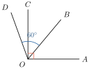
ខ្លឹមសារ៖ សៀវភៅពុម្ពគណិតវិទ្យាថ្នាក់ទី៧ របស់ក្រសួងអប់រំ យុវជន និងកីឡា · វាយអត្ថបទ គូររូបភាពឡើងវិញ និងរៀបចំលើអនឡាញដោយលោកគ្រូ សាន សុខលី សម្រាប់ការសិក្សាដោយឥតគិតថ្លៃ និងមិនរកប្រាក់ចំណេញ។ មិនមែនជាការបោះពុម្ពផ្លូវការរបស់ក្រសួងទេ។